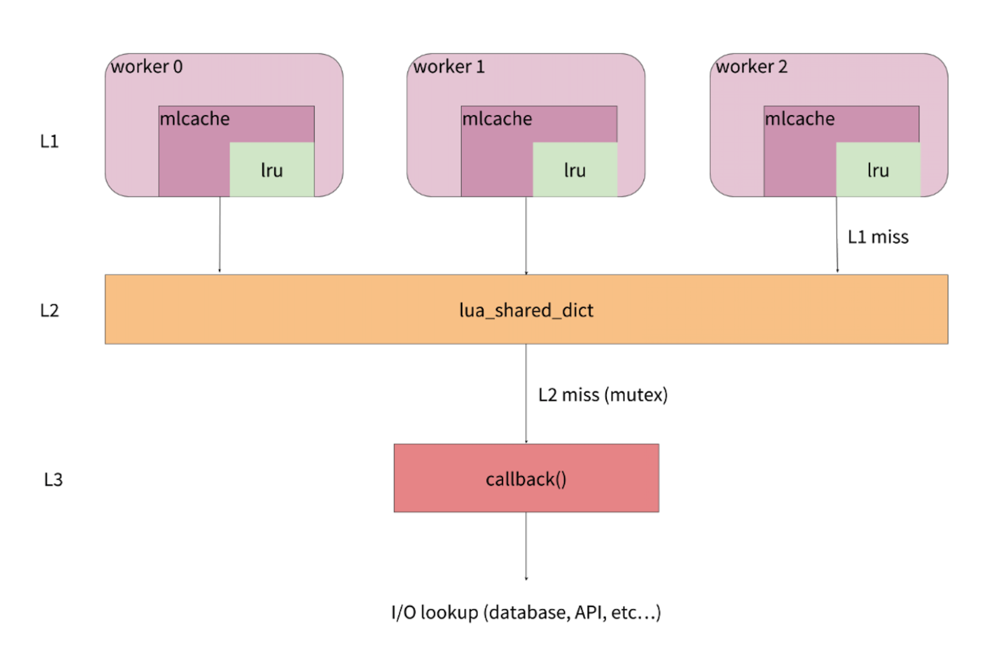

- 00 开篇词 OpenResty，为你打开高性能开发的大门.md.html
- 01 初探OpenResty的三大特性.md.html
- 02 如何写出你的“hello world”？.md.html
- 03 揪出隐藏在背后的那些子项目.md.html
- 04 如何管理第三方包？从包管理工具luarocks和opm说起.md.html
- 05 [视频]opm项目导读.md.html
- 06 OpenResty 中用到的 NGINX 知识.md.html
- 07 带你快速上手 Lua.md.html
- 08 LuaJIT分支和标准Lua有什么不同？.md.html
- 09 为什么 lua-resty-core 性能更高一些？.md.html
- 10 JIT编译器的死穴：为什么要避免使用 NYI ？.md.html
- 11 剖析Lua唯一的数据结构table和metatable特性.md.html
- 12 高手秘诀：识别Lua的独有概念和坑.md.html
- 13 [视频]实战：基于FFI实现的lua-resty-lrucache.md.html
- 14 答疑（一）：Lua 规则和 NGINX 配置文件产生冲突怎么办？.md.html
- 15 OpenResty 和别的开发平台有什么不同？.md.html
- 16 秒杀大多数开发问题的两个利器：文档和测试案例.md.html
- 17 为什么能成为更好的Web服务器？动态处理请求和响应是关键.md.html
- 18 worker间的通信法宝：最重要的数据结构之shared dict.md.html
- 19 OpenResty 的核心和精髓：cosocket.md.html
- 20 超越 Web 服务器：特权进程和定时任务.md.html
- 21 带你玩转时间、正则表达式等常用API.md.html
- 22 [视频]从一个安全漏洞说起，探寻API性能和安全的平衡.md.html
- 23 [视频]导读lua-resty-requests：优秀的lua-resty-_是如何编写的？.md.html
- 24 实战：处理四层流量，实现Memcached Server.md.html
- 25 答疑（二）：特权进程的权限到底是什么？.md.html
- 26 代码贡献者的拦路虎：test__nginx 简介.md.html
- 27 test__nginx 包罗万象的测试方法.md.html
- 28 test__nginx 还可以这样用？.md.html
- 29 最容易失准的性能测试？你需要压测工具界的“悍马”wrk.md.html
- 30 答疑（三）如何搭建测试的网络结构？.md.html
- 31 性能下降10倍的真凶：阻塞函数.md.html
- 32 让人又恨又爱的字符串操作.md.html
- 33 性能提升10倍的秘诀：必须用好 table.md.html
- 34 特别放送：OpenResty编码指南.md.html
- 35 [视频]实际项目中的性能优化：ingress-nginx中的几个PR解读.md.html
- 36 盘点OpenResty的各种调试手段.md.html
- 37 systemtap-toolkit和stapxx：如何用数据搞定“疑难杂症”？.md.html
- 38 [视频]巧用wrk和火焰图，科学定位性能瓶颈.md.html
- 39 高性能的关键：shared dict 缓存和 lru 缓存.md.html
- 40 缓存与风暴并存，谁说缓存风暴不可避免？.md.html
- 41 lua-resty-_ 封装，让你远离多级缓存之痛.md.html
- 42 如何应对突发流量：漏桶和令牌桶的概念.md.html
- 43 灵活实现动态限流限速，其实没有那么难.md.html
- 44 OpenResty 的杀手锏：动态.md.html
- 45 不得不提的能力外延：OpenResty常用的第三方库.md.html
- 46 答疑（四）：共享字典的缓存是必须的吗？.md.html
- 47 微服务API网关搭建三步曲（一）.md.html
- 48 微服务API网关搭建三步曲（二）.md.html
- 49 微服务API网关搭建三步曲（三）.md.html
- 50 答疑（五）：如何在工作中引入 OpenResty？.md.html
- 结束语 行百里者半九十.md.html
- 捐赠
41 lua-resty-_ 封装，让你远离多级缓存之痛
41 lua-resty-* 封装，让你远离多级缓存之痛
你好，我是温铭。
前面两节课中，我们已经学习了 OpenResty 中的缓存，以及容易出错的缓存风暴问题，这些都是属于偏基础的一些知识。在实际的项目开发中，开发者自然更希望有一个已经把各种细节处理好并隐藏起来的开箱即用的库，可以拿来直接开发业务代码。
这其实就是分工的一个好处，基础组件的开发者，重心在于架构灵活、性能极致、代码稳定，并不需要关心上层业务逻辑；而应用层的工程师，更关心的是业务实现和快速迭代，并不希望被底层的各种技术细节分心。这中间的鸿沟，就需要有一些封装库来填平了。
OpenResty 中的缓存，也面临一样的问题。共享字典和 lru 缓存足够稳定和高效，但需要处理太多的细节。如果没有一些好用的封装，那么到达应用开发工程师的“最后一公里”，就会变得比较痛苦。这个时候，就要体现社区的重要性了。一个活跃的社区，会主动去发现鸿沟，并迅速地填平。
lua-resty-memcached-shdict
让我们回到缓存的封装上来。lua-resty-memcached-shdict 是 OpenResty 官方的一个项目，它使用 shared dict 为 memcached 做了一层封装，处理了缓存风暴和过期数据等细节。如果你的缓存数据正好存储在后端的 memcached 中，那么你可以尝试使用这个库。
它虽然是 OpenResty 官方开发的库，但默认并没有打进 OpenResty 的包中。如果你想在本地测试，需要先把它的源码下载到本地 OpenResty 的查找路径下。
这个封装库，其实和我们上节课中提到的解决方案是一样的。它使用 lua-resty-lock 来做到互斥，在缓存失效的情况下，只有一个请求去 memcached 中获取数据，避免缓存风暴。如果没有获取到最新数据，则使用 stale 数据返回给终端。
不过，这个 lua-resty 库虽说是 OpenResty 官方的项目，但也并不完美。首先，它没有测试案例覆盖，这就意味着代码质量无法得到持续的保证；其次，它暴露的接口参数过多，有 11 个必填参数和 7 个选填参数：
local memc_fetch, memc_store =
shdict_memc.gen_memc_methods{
tag = "my memcached server tag",
debug_logger = dlog,
warn_logger = warn,
error_logger = error_log,
locks_shdict_name = "some_lua_shared_dict_name",
shdict_set = meta_shdict_set,
shdict_get = meta_shdict_get,
disable_shdict = false, -- optional, default false
memc_host = "127.0.0.1",
memc_port = 11211,
memc_timeout = 200, -- in ms
memc_conn_pool_size = 5,
memc_fetch_retries = 2, -- optional, default 1
memc_fetch_retry_delay = 100, -- in ms, optional, default to 100 (ms)
memc_conn_max_idle_time = 10 * 1000, -- in ms, for in-pool connections,optional, default to nil
memc_store_retries = 2, -- optional, default to 1
memc_store_retry_delay = 100, -- in ms, optional, default to 100 (ms)
store_ttl = 1, -- in seconds, optional, default to 0 (i.e., never expires)
}
这其中暴露的绝大部分参数，其实可以通过“新建一个 memcached 的处理函数”的方式来简化。当前这种把所有参数一股脑儿地丢给用户来填写的封装方式并不友好，所以，我也很欢迎有兴趣的开发者，贡献 PR 来做这方面的优化。
另外，在这个封装库的文档中，其实也提到了进一步的优化方向：
- 一是使用
lua-resty-lrucache，来增加 worker 层的缓存，而不仅仅是 server 级别的 shared dict 缓存； - 二是使用
ngx.timer，来做异步的缓存更新操作。
第一个方向其实是很不错的建议，因为 worker 内的缓存性能自然会更好；而第二个建议，就需要你根据自己的实际场景来考量了。不过，一般我并不推荐使用，这不仅是因为 timer 的数量是有限制的，而且如果这里的更新逻辑出错，就再也不会去更新缓存了，影响面比较大。
lua-resty-mlcache
接下来，我们再来介绍下，在 OpenResty 中被普遍使用的缓存封装： lua-resty-mlcache。它使用 shared dict 和 lua-resty-lrucache ，实现了多层缓存机制。我们下面就通过两段代码示例，来看看这个库如何使用：
local mlcache = require "resty.mlcache"
local cache, err = mlcache.new("cache_name", "cache_dict", {
lru_size = 500, -- size of the L1 (Lua VM) cache
ttl = 3600, -- 1h ttl for hits
neg_ttl = 30, -- 30s ttl for misses
})
if not cache then
error("failed to create mlcache: " .. err)
end
先来看第一段代码。这段代码的开头引入了 mlcache 库，并设置了初始化的参数。我们一般会把这段代码放到 init 阶段，只需要做一次就可以了。
除了缓冲名和字典名这两个必填的参数外，第三个参数是一个字典，里面 12 个选项都是选填的，不填的话就使用默认值。这种方式显然就比 lua-resty-memcached-shdict 要优雅很多。其实，我们自己来设计接口的话，也最好采用 mlcache 这样的做法——让接口尽可能地简单，同时还保留足够的灵活性。
下面再来看第二段代码，这是请求处理时的逻辑代码：
local function fetch_user(id)
return db:query_user(id)
end
local id = 123
local user , err = cache:get(id , nil , fetch_user , id)
if err then
ngx.log(ngx.ERR , "failed to fetch user: ", err)
return
end
if user then
print(user.id) -- 123
end
你可以看到，这里已经把多层缓存都给隐藏了，你只需要使用 mlcache 的对象去获取缓存，并同时设置好缓存失效后的回调函数就可以了。这背后复杂的逻辑，就可以被完全地隐藏了。
说到这里，你可能好奇，这个库内部究竟是怎么实现的呢？接下来，再让我们来看下这个库的架构和实现。下面这张图，来自 mlcache 的作者 thibault 在 2018 年 OpenResty 大会上演讲的幻灯片：

从图中你可以看到，mlcache 把数据分为了三层，即L1、L2和L3。
L1 缓存就是 lua-resty-lrucache。每一个 worker 中都有自己独立的一份，有 N 个 worker，就会有 N 份数据，自然也就存在数据冗余。由于在单 worker 内操作 lrucache 不会触发锁，所以它的性能更高，适合作为第一级缓存。
L2 缓存是 shared dict。所有的 worker 共用一份缓存数据，在 L1 缓存没有命中的情况下，就会来查询 L2 缓存。ngx.shared.DICT 提供的 API，使用了自旋锁来保证操作的原子性，所以这里我们并不用担心竞争的问题；
L3 则是在 L2 缓存也没有命中的情况下，需要执行回调函数去外部数据库等数据源查询后，再缓存到 L2 中。在这里，为了避免缓存风暴，它会使用 lua-resty-lock ，来保证只有一个 worker 去数据源获取数据。
整体而言，从请求的角度来看，
- 首先会去查询 worker 内的 L1 缓存，如果L1命中就直接返回。
- 如果L1没有命中或者缓存失效，就会去查询 worker 间的 L2 缓存。如果L2命中就返回，并把结果缓存到 L1 中。
- 如果L2 也没有命中或者缓存失效，就会调用回调函数，从数据源中查到数据，并写入到 L2 缓存中，这也就是L3数据层的功能。
从这个过程你也可以看出，缓存的更新是由终端请求来被动触发的。即使某个请求获取缓存失败了，后续的请求依然可以触发更新的逻辑，以便最大程度地保证缓存的安全性。
不过，虽然 mlcache 已经实现得比较完美了，但在现实使用中，其实还有一个痛点——数据的序列化和反序列化。这个其实并不是 mlcache 的问题，而是我们之前反复提到的 lrucache 和 shared dict 之间的差异造成的。在 lrucache 中，我们可以存储 Lua 的各种数据类型，包括 table；但 shared dict 中，我们只能存储字符串。
L1 也就是 lrucache 缓存，是用户真正接触到的那一层数据，我们自然希望在其中可以缓存各种数据，包括字符串、table、cdata 等。可是，问题在于， L2 中只能存储字符串。那么，当数据从 L2 提升到 L1 的时候，我们就需要做一层转换，也就是从字符串转成我们可以直接给用户的数据类型。
还好，mlcache 已经考虑到了这种情况，并在 new 和 get 接口中，提供了可选的函数 l1_serializer，专门用于处理 L2 提升到 L1 时对数据的处理。我们可以来看下面的示例代码，它是我从测试案例集中摘选出来的：
local mlcache = require "resty.mlcache"
local cache, err = mlcache.new("my_mlcache", "cache_shm", {
l1_serializer = function(i)
return i + 2
end,
})
local function callback()
return 123456
end
local data = assert(cache:get("number", nil, callback))
assert(data == 123458)
简单解释一下。在这个案例中，回调函数返回数字 123456；而在 new 中，我们设置的 l1_serializer 函数会在设置 L1 缓存前，把传入的数字加 2，也就是变成 123458。通过这样的序列化函数，数据在 L1 和 L2 之间转换的时候，就可以更加灵活了。
可以说，mlcache 是一个功能很强大的缓存库，而且文档也写得非常详尽。今天这节课我只提到了核心的一些原理，更多的使用方法，建议你一定要自己花时间去探索和实践。
写在最后
有了多层缓存，服务端的性能才能得到最大限度的保证，而这中间又隐藏了很多的细节。这时候，有一个稳定、高效的封装库，我们就能省心很多。我也希望通过今天介绍的这两个封装库，帮助你更好地理解缓存。
最后给你留一个思考题，共享字典这一层缓存是必须的吗？如果只用 lrucache 是否可以呢？欢迎留言和我分享你的观点，也欢迎你把这篇文章分享出去，和更多的人一起交流和进步。
© 2019 - 2023 Liangliang Lee. Powered by gin and hexo-theme-book.